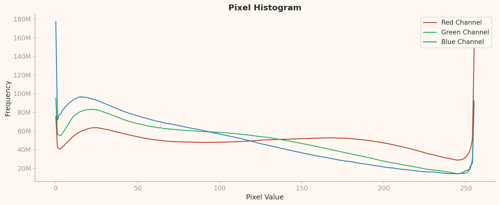
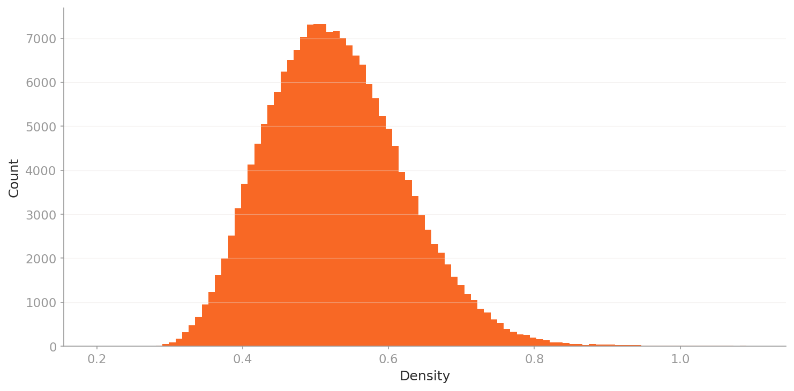
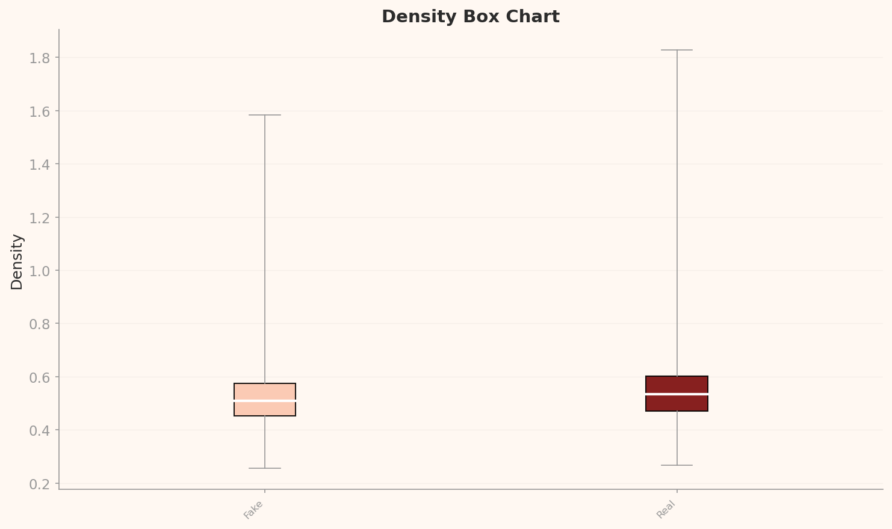

2026.04 · Pebblous Data Communication Team
Reading time: ~15 min · 한국어
Executive Summary
This article is based on the analysis from DataClinic Report #169. When 190,000 deepfake and real face images were diagnosed with DataClinic, the dataset earned a score of 91 out of 100 ("Good"), demonstrating high quality in class balance, resolution uniformity, and label integrity. However, feature-space analysis revealed that Fake and Real images are almost perfectly intermixed, confirming the fundamental difficulty of deepfake detection at the data level.
Under a general-purpose neural network (L2, 1,280 dimensions), the entire dataset forms a single triangular cluster. Under a domain-optimized model (L3, 177 dimensions), this shape transforms into a heart, exposing subtle structural differentiation within the data. The phenomenon of Real images monopolizing the high-density core suggests that the concept of a "typical face" maps more naturally onto Real photographs.
In practical terms, this dataset is ready for immediate use in deepfake detection model training. That said, separately managing low-density outliers — faces in tattoos, non-frontal compositions, and multi-person images — can further boost model performance. DataClinic's sole recommendation of "Data Bulk-up" is best interpreted as a call to collect additional data that covers the extreme outliers the current set does not fully represent.
DataClinic Grade Summary
Dataset Overview — Deepfake vs Real Images
deepfake-and-real-images is a binary classification dataset for deepfake detection, publicly available on Hugging Face. It contains 191,857 face images at 256x256 RGB resolution, split into Fake (95,201) and Real (96,656) classes with a class ratio of 1.015 — near-perfect balance.
Deepfake detection is one of the defining AI security challenges of our time. Fabricated political videos, synthetic faces used in financial fraud, manipulated photos flooding social media — defending against all of these threats requires high-quality training data. How well this dataset serves that role is exactly what DataClinic's three-level diagnosis reveals.

Dataset Specifications
- 191,857 images (used in diagnosis)
- 1.7 GB (1,752 MB)
- 256x256 px — square, pre-processed
- RGB channels — consistent throughout
- 2 classes — Fake / Real
- Near-perfect balance — ratio 1.015
Class Breakdown
- Fake: 95,201 — deepfake-generated faces
- Real: 96,656 — authentic human faces
- Std. deviation: 1,028.8 images
- Source: Hugging Face
Level 1 — Basic Quality Diagnosis
Level 1 checks the fundamental health of a dataset across four dimensions: label integrity, missing values, class balance, and image resolution statistics. This dataset received a "Good" grade across all four. Because it was distributed in a pre-processed state, resolutions are uniformly 256x256, and labels contain no errors or gaps.
Particularly noteworthy is the class balance. With 95,201 Fake vs 96,656 Real images, the ratio is just 1.015 — meaning there is virtually no risk of class-imbalance bias during model training. For a deepfake detection dataset, this level of balance is exemplary design.
Pixel Histogram — The Color Fingerprint of Face Images
The pixel histogram shows the brightness distribution for each RGB channel across the entire dataset. All three channels exhibit prominent spikes at the extreme values (0 and 255). The Red channel shows the largest clipping at 255, reaching approximately 150 million in frequency, while the Blue channel records the highest spike at 0, around 178 million.
This is an inherent characteristic of face imagery. Skin tones drive high Red channel values (brightness clipping), while dark backgrounds and hair regions concentrate near Blue channel 0. In the mid-brightness range, Red is relatively flat, while Blue and Green skew toward lower values.

Mean Images — The Subtle Difference Between Fake and Real
Comparing the per-class mean images, both Fake and Real produce a frontal-facing face shape. However, subtle differences emerge — the Fake mean image shows a slightly rounder facial contour with a broader hairline distribution and softer edges. This reflects the tendency of deepfake generation models to synthesize faces anchored around an "average face."


Level 2 — How a General-Purpose Lens Sees Faces
Level 2 analyzes the data's structure in feature space extracted by Wolfram ImageIdentify Net V2 (1,280 dimensions). This general-purpose neural network was trained on a wide variety of images — objects, landscapes, animals, and more — so it views the dataset from the perspective of "images in general."
The result is unambiguous. All 191,857 images form a single cohesive cluster. Fake and Real are completely intermixed in the same space, and density values alone cannot separate the two classes. In a general-purpose feature space, deepfakes and real faces are effectively indistinguishable — and that is precisely what makes deepfakes so dangerous.
Density Contour — The Triangular Cluster
In the density contour chart, the data forms a single triangular / teardrop-shaped cluster. Contour lines stack concentrically around a clear density center, with density gradually decreasing toward the periphery — a classic unimodal structure.

Density Distribution — What the Right Tail Means
The density histogram shows a slightly right-skewed unimodal distribution. The peak sits in the 0.11–0.12 range, where the majority of images are concentrated. The long right tail indicates that particularly "typical" face photographs carry high density values, and this skew is the reason the distribution grade came in as "Moderate."

Fake vs Real Density Comparison
In the density box chart, the boxes for Fake (median ~0.119) and Real (median ~0.125) overlap almost completely. But there is one critical difference — Real's upper whisker extends to 0.575, far wider than Fake's 0.393. This indicates that particularly "typical" faces cluster at high density and belong exclusively to Real.

Key finding: Under a general-purpose lens, Fake and Real are nearly indistinguishable. However, the fact that all high-density outliers are Real reveals that "quintessential face photographs" — ID-photo style, frontal, evenly lit — are concentrated in the Real class. Deepfake generation models may not yet fully replicate these "extremely typical" faces.
Level 3 — What the Domain-Specific Lens Reveals
Level 3 re-analyzes the same data through a domain-optimized model (177 dimensions). Although the dimensionality dropped dramatically from L2's 1,280 to 177, the internal structure of the data actually becomes sharper. That is the core value of domain optimization — by stripping away irrelevant dimensions and retaining only meaningful features, it lets us see the data's true structure.
From Triangle to Heart — A Shape Shift in Cluster Geometry
The density contour that appeared as a triangle/teardrop in L2 transforms into a heart shape in L3. The primary density center sits at the bottom, with a secondary lobe forming above, creating an overall heart silhouette.
This dual-lobe structure suggests that L3's domain optimization has captured some of the subtle feature differences between Fake and Real. The two lobes are not fully separated, but an internal structural differentiation that was invisible in L2 has now emerged. Viewing the same data through a different lens reveals a different shape — and that is the value of multi-level diagnosis.

General-Purpose Lens (1,280-D)
- Triangular / teardrop cluster
- Distribution grade: Moderate
- Mean density: 0.124
- Real max density: 0.575
Domain-Specific Lens (177-D)
- Heart-shaped cluster (dual lobe)
- Distribution grade: Good
- Mean density: 0.530
- Real max density: 1.828
L3 Density Distribution — More Symmetric, More Stable
The L3 density histogram is noticeably more symmetric than L2's. The peak sits in the 0.48–0.50 range, with values spread from 0.2 to 1.1 — a wider range than L2. As the right tail shortens, the distribution grade rises from "Moderate" to "Good" — a sign that domain optimization has spread the data more uniformly.

Fake vs Real at L3
In the L3 density box chart, the gap between Fake (median ~0.51) and Real (median ~0.535) follows a similar pattern to L2, but the density values themselves are much higher. Critically, Real's whisker range (~1.83) extends well beyond Fake's (~1.58), confirming even more strongly than L2 that a high-density core group exists within Real. All L3 high-density outliers are also exclusively Real.

Representative Samples — What the Model Is Most and Least Confident About
The most intuitive output of density-based analysis is the actual image samples themselves. High-density images sit at the core of feature space — the "most typical" images — while low-density images lie at the periphery — the "most atypical." Comparing these two extremes reveals where a deepfake detection model performs well and where it is likely to struggle.
High Density — The Faces the Model Knows Best
Every single high-density outlier is Real. The representative images are ID-photo style children's portraits — frontal gaze, uniform lighting, solid background, clean composition. These are the most "typical" face photograph type in the dataset, showing that standard portrait photos within the Real class dominate the feature-space core.


▲ Top 12 by density — every single one is Real. Not a single Fake image appears.
Pattern to note: All 12 high-density images are Real. The consecutive filenames (7903–7915, 36304–36315) suggest these images came from the same batch or shooting session under uniform conditions. This is direct evidence that deepfake detection models anchor their "standard portrait" reference in the Real class's feature-space core.
Real vs Fake — Class-Level Density Distribution
Placing the classwise density plots side by side makes it immediately clear why no Fake images appear in the high-density core. Real forms a narrow, tall cluster, while Fake spreads much more broadly. Because deepfake generation models employ a wide variety of styles, techniques, and backgrounds, they cannot form a single dense cluster in feature space.

▲ Real — narrow, tall cluster (high typicality)

▲ Fake — wider, flatter spread (diverse generation methods)
Low Density — The Model's Blind Spots
Low-density outliers contain a mix of Fake and Real, and every one of them departs from the "typical face photo" pattern. The representative Real low-density sample (image_32115) is a face tattooed on skin — not an actual human face, but ink on a body. A Fake low-density sample (image_2671) shows a child looking downward alongside a doll — non-frontal and atypical composition. Another Fake low-density sample (image_598) depicts two people wearing white head coverings with rain/noise overlay.


▲ Bottom 12 by density — Real and Fake intermingled. Images that stray from "typical face" end up in the same peripheral zone.
Key insight: The high-density core is monopolized by Real, while the low-density periphery is a Fake/Real mix. This means deepfake detection models can easily classify "typical faces" as Real, but struggle far more with atypical images — tattooed faces, non-frontal compositions, and noisy images — where Fake/Real distinction becomes much harder. The presence of a "tattoo face" among Real low-density samples also highlights the need for data curation.
Data Journalism — The Truth Behind the Training Data That Catches Deepfakes
Everyone knows why deepfakes are a societal problem. What far fewer people understand is where the AI that detects them actually learns. A deepfake detection model's performance ultimately depends on the quality of its training data. This dataset's DataClinic diagnosis lays bare that quality in hard numbers and visualizations.
What a Score of 91 Really Means — High Quality, but Not Perfect
A score of 91 ("Good") confirms that this dataset is fundamentally well-constructed. Class balance is near-perfect, resolution is uniform, and labels are error-free. So why not 100?
The L2 distribution grade came in as "Moderate" because of the asymmetric tail in the density distribution. And what creates that tail is precisely the Real class's high-density outliers — standard, ID-photo-style portraits. Paradoxically, the score is docked because overly typical Real images exist. From a data-quality standpoint, this is less a flaw than a characteristic of the dataset itself.
Training Data Quality = The Foundation of Detection Trustworthiness
The most important finding in this diagnosis is the composition of low-density outliers. Tattooed faces, non-frontal compositions, noise overlays — these atypical images cluster in the low-density region with no clear Fake/Real separation. In the real world, malicious deepfakes are more likely to be generated from varied angles, lighting conditions, and contexts rather than frontal ID-photo settings.
In other words, the patterns revealed by low-density outliers may closely mirror real-world deepfake threats. If a detection model is vulnerable in this region, it is likely vulnerable in production as well. This is why this dataset's quality diagnosis goes beyond a mere technical assessment — it connects directly to the foundation of societal trust.
What the Difference in Lenses Tells Us
The fact that a triangular cluster in L2 (general-purpose, 1,280-D) becomes heart-shaped in L3 (domain-optimized, 177-D) is not just a visual curiosity. It demonstrates that using the right tool for the problem makes the data tell a richer story. The distribution grade improving to "Good" at L3 is because domain optimization smoothed the asymmetric tail while revealing the data's intrinsic structure more clearly.
The bigger picture: The trustworthiness of deepfake detection AI underpins judicial decisions, election integrity, and financial security. That trustworthiness starts with training data quality. This dataset's score of 91 means "ready for immediate use," but the blind spots exposed by low-density outliers are a reminder that continuous data quality management is non-negotiable.
Verdict & Recommendations
With a DataClinic score of 91 ("Good"), this dataset is a high-quality resource that can be deployed immediately for deepfake detection model training. DataClinic's sole recommendation — "Data Bulk-up" — is not about fixing problems in the existing data, but about expanding the dataset's coverage to improve model generalization.
1. Separate Management of Low-Density Outliers
Isolate low-density outliers — tattooed faces, non-frontal compositions, multi-person images — into a dedicated subset and leverage them in a hard negative mining strategy. These images are the most effective material for strengthening a model's weak points.
2. Augment Atypical Fake Images (Data Bulk-up)
The current low-density Fake images are characterized by non-frontal compositions and noise overlays. Adding deepfake images generated from diverse angles, lighting conditions, and resolutions will improve the model's real-world resilience.
3. Increase Real Class Diversity
The fact that all high-density outliers are Real suggests an over-concentration of "ID-photo style" images within the Real class. Adding Real images from diverse settings — outdoor, low-light, varied ethnicities and ages — will make the feature-space distribution more uniform.
4. Curate Non-Face Images
The Real low-density set includes images like a "tattoo face" — not an actual person's photograph but ink on skin. Identifying and either removing or reclassifying such images will help the model learn a clearer definition of "face."
Frequently Asked Questions
Q. What does a DataClinic score of 91 mean?
DataClinic rates dataset quality on a 0–100 scale. A score of 91 ("Good") indicates that label integrity, class balance, resolution uniformity, and feature-space structure are all in good shape — the dataset is ready for model training out of the box.
Q. If Fake and Real overlap in feature space, does that mean deepfake detection is impossible?
Not at all. The general-purpose model used here (Wolfram ImageIdentify Net) is not specialized for deepfake detection. Dedicated detection models leverage frequency-domain analysis, facial landmark consistency, and generation artifacts — features specifically designed for this task. DataClinic evaluates "data quality," not "detection performance."
Q. Why does the cluster change from a triangle at L2 to a heart at L3?
L2 uses a 1,280-dimensional general-purpose feature space, while L3 uses a 177-dimensional domain-optimized space. During dimensionality reduction and domain-specific optimization, irrelevant features are stripped away, making the data's latent structure more visible. The heart's dual-lobe structure reflects subtle feature differentiation between Fake and Real.
Q. Can this dataset be used commercially?
You should check the dataset's license. Please verify the terms of use on the original Hugging Face page. DataClinic's diagnosis is a data quality assessment — license interpretation requires a separate legal review.
Q. What does "Data Bulk-up" mean?
DataClinic's Data Bulk-up recommendation means supplementing the existing data with additional images. For this dataset, collecting more of the atypical image types revealed by low-density outliers — faces from diverse angles, lighting conditions, and contexts — will improve the model's generalization performance.